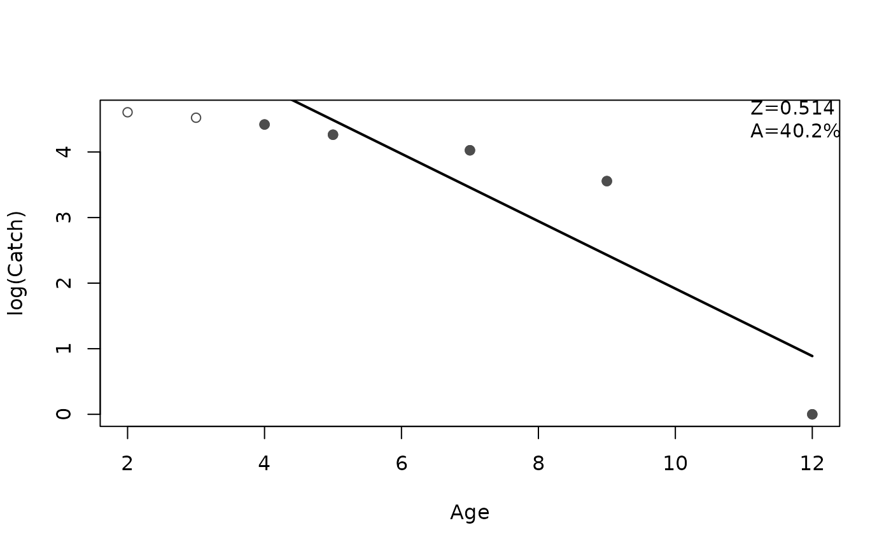

Fits a linear model to the user-defined descending limb of a catch curve. Method functions extract estimates of the instantaneous (Z) and total annual (A) mortality rates with associated standard errors and confidence intervals. A plot method highlights the descending limb, shows the linear model on the descending limb, and, optionally, prints the estimated Z and A.
Usage
catchCurve(x, ...)
# Default S3 method
catchCurve(
x,
catch,
ages2use = age,
weighted = FALSE,
negWeightReplace = 0,
...
)
# S3 method for class 'formula'
catchCurve(
x,
data,
ages2use = age,
weighted = FALSE,
negWeightReplace = 0,
...
)
# S3 method for class 'catchCurve'
summary(object, parm = c("both", "all", "Z", "A", "lm"), as.df = FALSE, ...)
# S3 method for class 'catchCurve'
coef(object, parm = c("all", "both", "Z", "A", "lm"), as.df = FALSE, ...)
# S3 method for class 'catchCurve'
anova(object, ...)
# S3 method for class 'catchCurve'
confint(
object,
parm = c("all", "both", "Z", "A", "lm"),
level = conf.level,
conf.level = 0.95,
as.df = FALSE,
incl.est = FALSE,
...
)
# S3 method for class 'catchCurve'
rSquared(object, digits = getOption("digits"), percent = FALSE, ...)
# S3 method for class 'catchCurve'
plot(
x,
pos.est = "topright",
cex.est = 0.95,
round.est = c(3, 1),
ylab = "log(Catch)",
xlab = "Age",
ylim = NULL,
col.pt = "gray30",
col.mdl = "black",
lwd = 2,
lty = 1,
...
)Arguments
- x
A numerical vector of assigned ages in the catch curve or a formula of the form
catch~agewhen used incatchCurve. An object saved fromcatchCurve(i.e., of classcatchCurve) when used in the methods.- ...
Additional arguments for methods.
- catch
A numerical vector of catches or CPUEs for the ages in the catch curve. Not used if
xis a formula.- ages2use
A numerical vector of ages that define the descending limb of the catch curve.
- weighted
A logical that indicates whether a weighted regression should be used. See details.
- negWeightReplace
A single non-negative numeric that will replace negative weights (defaults to 0). Only used when
weighted=TRUE. See details.- data
A data.frame from which the variables in the
xformula can be found. Not used ifxis not a formula.- object
An object saved from the
catchCurvecall (i.e., of classcatchCurve).- parm
A numeric or string (of parameter names) vector that specifies which parameters are to be given confidence intervals. If
parm="lm"then confidence intervals for the underlying linear model are returned.- as.df
A logical that indicates whether the results of
coef,confint, orsummaryshould be returned as a data.frame. Ignored insummaryifparm="lm".- level
Same as
conf.level. Used for compatibility with the genericconfintfunction.- conf.level
A number representing the level of confidence to use for constructing confidence intervals.
- incl.est
A logical that indicated whether the parameter point estimate should be included in the results from
confint. Defaults toFALSE.- digits
The number of digits to round the
rSquaredresult to.- percent
A logical that indicates if the
rSquaredresult should be returned as a percentage (=TRUE) or as a proportion (=FALSE; default).- pos.est
A string to identify where to place the estimated mortality rates on the plot. Can be set to one of
"bottomright","bottom","bottomleft","left","topleft","top","topright","right"or"center"for positioning the estimated mortality rates on the plot. Typically"bottomleft"(DEFAULT) and"topright"will be “out-of-the-way” placements. Setpos.esttoNULLto remove the estimated mortality rates from the plot.- cex.est
A single numeric character expansion value for the estimated mortality rates on the plot.
- round.est
A numeric that indicates the number of decimal place to which Z (first value) and A (second value) should be rounded. If only one value then it will be used for both Z and A.
- ylab
A label for the y-axis (
"log(Catch)"is the default).- xlab
A label for the x-axis (
"Age"is the default).- ylim
A numeric for the limits of the y-axis. If
NULLthen will default to a minimum of 0 or the lowest negative log catch and a maximum of the maximum log catch. If a single value then it will be the maximum of the y-axis. If two values then these will the minimum and maximum values of the y-axis.- col.pt
A string that indicates the color of the plotted points.
- col.mdl
A string that indicates the color of the fitted line.
- lwd
A numeric that indicates the line width of the fitted line.
- lty
A numeric that indicates the type of line used for the fitted line.
Value
A list that contains the following items:
age The original vector of assigned ages.
catch The original vector of observed catches or CPUEs.
age.e A vector of assigned ages for which the catch curve was fit.
log.catch.e A vector of log catches or CPUEs for which the catch curve was fit.
W A vector of weights used in the catch curve fit. Will be
NULLunlessweighted=TRUE.lm An
lmobject from the fit to the ages and log catches or CPUEs on the descending limb (i.e., in age.e and log.catch.e).
Details
The default is to use all ages in the age vector. This is appropriate only when the age and catch vectors contain only the ages and catches on the descending limb of the catch curve. Use ages2use to isolate only the catch and ages on the descending limb.
If weighted=TRUE then a weighted regression is used where the weights are the log(number) at each age predicted from the unweighted regression of log(number) on age (as proposed by Maceina and Bettoli (1998)). If a negative weight is computed it will be changed to the value in negWeightReplace and a warning will be issued.
Testing
Tested the results of catch curve, both unweighted and weighted, against the results in Miranda and Bettoli (2007). Results for Z and the SE of Z matched perfectly. Tested the unweighted results against the results from agesurv in fishmethods using the rockbass data.frame in fishmethods. Results for Z and the SE of Z matched perfectly.
References
Ogle, D.H. 2016. Introductory Fisheries Analyses with R. Chapman & Hall/CRC, Boca Raton, FL.
Maceina, M.J., and P.W. Bettoli. 1998. Variation in Largemouth Bass recruitment in four mainstream impoundments on the Tennessee River. North American Journal of Fisheries Management 18:998-1003.
Ricker, W.E. 1975. Computation and interpretation of biological statistics of fish populations. Technical Report Bulletin 191, Bulletin of the Fisheries Research Board of Canada. [Was (is?) from http://www.dfo-mpo.gc.ca/Library/1485.pdf.]
See also
See agesurv in fishmethods for similar functionality. See chapmanRobson and agesurvcl in fishmethods for alternative methods to estimate mortality rates. See metaM for empirical methods to estimate natural mortality.
Author
Derek H. Ogle, DerekOgle51@gmail.com
Examples
plot(catch~age,data=BrookTroutTH,pch=19)
## demonstration of formula notation
cc1 <- catchCurve(catch~age,data=BrookTroutTH,ages2use=2:6)
summary(cc1)
#> Estimate Std. Error t value Pr(>|t|)
#> Z 0.659987 0.136741 4.826549 0.01695159
#> A 48.314197 NA NA NA
coef(cc1)
#> Z A
#> 0.659987 48.314197
confint(cc1)
#> 95% LCI 95% UCI
#> Z 0.2248162 1.095158
#> A 20.1337012 66.551321
confint(cc1,incl.est=TRUE)
#> Est 95% LCI 95% UCI
#> Z 0.659987 0.2248162 1.095158
#> A 48.314197 20.1337012 66.551321
rSquared(cc1)
#> [1] 0.8859124
plot(cc1)
summary(cc1,parm="Z")
#> Estimate Std. Error t value Pr(>|t|)
#> Z 0.659987 0.136741 4.826549 0.01695159
confint(cc1,parm="Z",incl.est=TRUE)
#> Est 95% LCI 95% UCI
#> Z 0.659987 0.2248162 1.095158
## demonstration of excluding ages2use
cc2 <- catchCurve(catch~age,data=BrookTroutTH,ages2use=-c(0,1))
summary(cc2)
#> Estimate Std. Error t value Pr(>|t|)
#> Z 0.659987 0.136741 4.826549 0.01695159
#> A 48.314197 NA NA NA
plot(cc2)
## demonstration of using weights
cc3 <- catchCurve(catch~age,data=BrookTroutTH,ages2use=2:6,weighted=TRUE)
summary(cc3)
#> Estimate Std. Error t value Pr(>|t|)
#> Z 0.6430183 0.1417433 4.5365 0.02004993
#> A 47.4296703 NA NA NA
plot(cc3)
## demonstration of returning the linear model results
summary(cc3,parm="lm")
#>
#> Call:
#> stats::lm(formula = log.catch.e ~ age.e, weights = W, na.action = stats::na.exclude)
#>
#> Weighted Residuals:
#> 1 2 3 4 5
#> -0.008845 -0.551857 1.155519 -0.513606 -0.103196
#>
#> Coefficients:
#> Estimate Std. Error t value Pr(>|t|)
#> (Intercept) 6.0086 0.5475 10.974 0.00162 **
#> age.e -0.6430 0.1417 -4.536 0.02005 *
#> ---
#> Signif. codes: 0 ‘***’ 0.001 ‘**’ 0.01 ‘*’ 0.05 ‘.’ 0.1 ‘ ’ 1
#>
#> Residual standard error: 0.7988 on 3 degrees of freedom
#> Multiple R-squared: 0.8728, Adjusted R-squared: 0.8304
#> F-statistic: 20.58 on 1 and 3 DF, p-value: 0.02005
#>
confint(cc3,parm="lm",incl.est=TRUE)
#> Est 95% LCI 95% UCI
#> (Intercept) 6.0085938 4.266116 7.751072
#> age.e -0.6430183 -1.094109 -0.191928
## demonstration of ability to work with missing age classes
df <- data.frame(age=c( 2, 3, 4, 5, 7, 9,12),
ct= c(100,92,83,71,56,35, 1))
cc4 <- catchCurve(ct~age,data=df,ages2use=4:12)
#> Warning: Some 'ages2use' not in observed ages.
summary(cc4)
#> Estimate Std. Error t value Pr(>|t|)
#> Z 0.5139824 0.1495532 3.436786 0.04133277
#> A 40.1891060 NA NA NA
plot(cc4)

## demonstration of ability to work with missing age classes
## even if catches are recorded as NAs
df <- data.frame(age=c( 2, 3, 4, 5, 6, 7, 8, 9,10,11,12),
ct= c(100,92,83,71,NA,56,NA,35,NA,NA, 1))
cc5 <- catchCurve(ct~age,data=df,ages2use=4:12)
summary(cc5)
#> Estimate Std. Error t value Pr(>|t|)
#> Z 0.5139824 0.1495532 3.436786 0.04133277
#> A 40.1891060 NA NA NA
plot(cc5)
## Demonstration of computation for multiple groups
## only ages on the descending limb for each group are in the data.frame
# Get example data
data(FHCatfish,package="FSAdata")
FHCatfish
#> river age abundance
#> 1 Coosa 2 25
#> 2 Coosa 3 24
#> 3 Coosa 4 18
#> 4 Coosa 5 17
#> 5 Coosa 6 29
#> 6 Coosa 7 14
#> 7 Coosa 8 5
#> 8 Coosa 9 10
#> 9 Coosa 10 15
#> 10 Coosa 11 7
#> 11 Coosa 12 11
#> 12 Coosa 13 10
#> 13 Coosa 14 5
#> 14 Coosa 15 1
#> 15 Coosa 16 4
#> 16 Coosa 17 2
#> 17 Coosa 18 2
#> 18 Coosa 20 1
#> 19 Coosa 25 1
#> 20 Ocmulgee 2 32
#> 21 Ocmulgee 3 15
#> 22 Ocmulgee 4 13
#> 23 Ocmulgee 5 8
#> 24 Ocmulgee 6 6
#> 25 Ocmulgee 7 11
#> 26 Ocmulgee 8 7
#> 27 Ocmulgee 9 8
#> 28 Ocmulgee 10 2
#> 29 Ocmulgee 11 1
#> 30 Ocmulgee 12 1
#> 31 Ocmulgee 13 1
#> 32 Ocmulgee 16 1
#> 33 Satilla 2 94
#> 34 Satilla 3 77
#> 35 Satilla 4 36
#> 36 Satilla 5 2
#> 37 Satilla 6 1
#> 38 Satilla 7 1
#> 39 Satilla 10 1
# Note use of incl.est=TRUE and as.df=TRUE
if (require(dplyr)) {
res <- FHCatfish %>%
dplyr::group_by(river) %>%
dplyr::group_modify(~confint(catchCurve(abundance~age,data=.x),
incl.est=TRUE,as.df=TRUE)) %>%
as.data.frame() # removes tibble and grouping structure
res
}
#> Loading required package: dplyr
#>
#> Attaching package: ‘dplyr’
#> The following object is masked from ‘package:car’:
#>
#> recode
#> The following objects are masked from ‘package:stats’:
#>
#> filter, lag
#> The following objects are masked from ‘package:base’:
#>
#> intersect, setdiff, setequal, union
#> river Z Z_LCI Z_UCI A A_LCI A_UCI
#> 1 Coosa 0.1638099 0.1226277 0.2049921 15.10966 11.54071 18.53462
#> 2 Ocmulgee 0.2688858 0.1935034 0.3442682 23.57695 17.59330 29.12612
#> 3 Satilla 0.6830087 0.1952544 1.1707630 49.49050 17.73746 68.98698
## Demonstration of computation for multiple groups
## ages not on descending limb are in the data.frame, but use same
## ages.use= for each group
# Get example data
data(WalleyeKS,package="FSAdata")
# Note use of incl.est=TRUE and as.df=TRUE
if (require(dplyr)) {
res <- WalleyeKS %>%
dplyr::group_by(reservoir) %>%
dplyr::group_modify(~confint(catchCurve(catch~age,data=.x,ages2use=2:10),
incl.est=TRUE,as.df=TRUE)) %>%
as.data.frame() # removes tibble and grouping structure
res
}
#> Warning: Some 'ages2use' not in observed ages.
#> Warning: Some 'ages2use' not in observed ages.
#> Warning: Some 'ages2use' not in observed ages.
#> Warning: Some 'ages2use' not in observed ages.
#> Warning: Some 'ages2use' not in observed ages.
#> Warning: Some 'ages2use' not in observed ages.
#> Warning: Some 'ages2use' not in observed ages.
#> Warning: Some 'ages2use' not in observed ages.
#> reservoir Z Z_LCI Z_UCI A A_LCI A_UCI
#> 1 Cedar.Bluff 0.8109321 0.6640010 0.9578633 55.55564 48.52125 61.62881
#> 2 Cheney 0.5511305 0.1738865 0.9283745 42.37021 15.96077 60.48044
#> 3 Glen.Elder 0.8549700 0.5157957 1.1941443 57.47040 40.29747 69.70369
#> 4 Kirwin 0.9409243 0.4934289 1.3884198 60.97331 38.94707 75.05308
#> 5 Lovewell 0.7342132 0.4071760 1.0612505 52.01171 33.44729 65.39772
#> 6 Marion 0.6125949 0.3462704 0.8789193 45.80572 29.26788 58.47686
#> 7 Webster 0.5670799 0.1320663 1.0020935 43.28208 12.37171 63.28899
#> 8 Wilson 0.7194050 0.5551028 0.8837072 51.29580 42.59867 58.67519